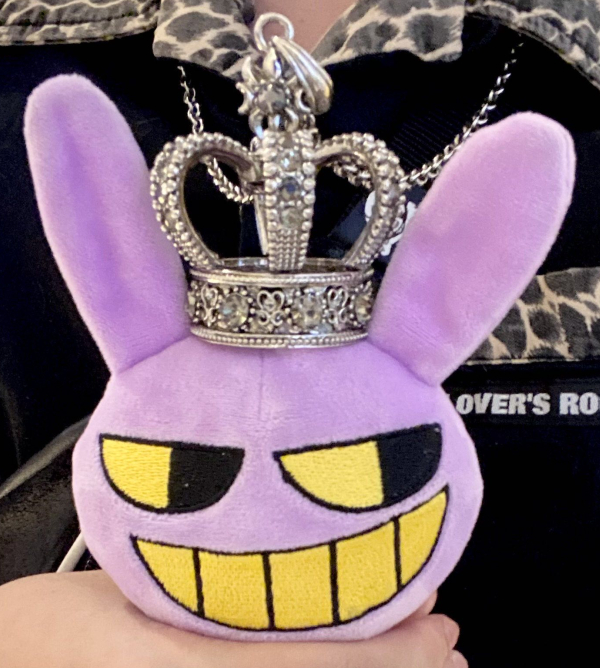
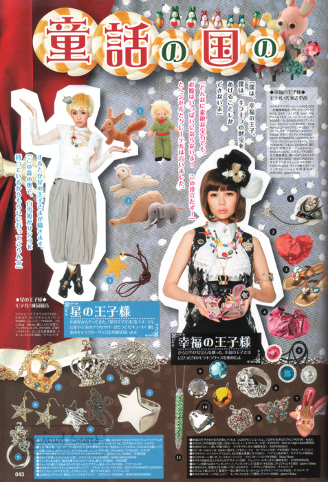

Big Crown Necklace
")
|
|
Brand:Sexy Dynamite London Web Documentation: |
|
2025.11.31Many Tokyo street brands source the same crown cast and I found this particular necklace featured on Alice Deco A La Mode, page 43, crediting SDL. If it weren't for this scan, I would have kept it labeled under Meta. This same pendant can be found under Algonquins, Meta, Alice On Wednesday, and apparently Wego. Prone to mass-produced type as its widely accessible on taobao besides the Tokyo brands, worn often in online jirai spaces, and it happens that jirai is the 2020's popular thing. |
|

